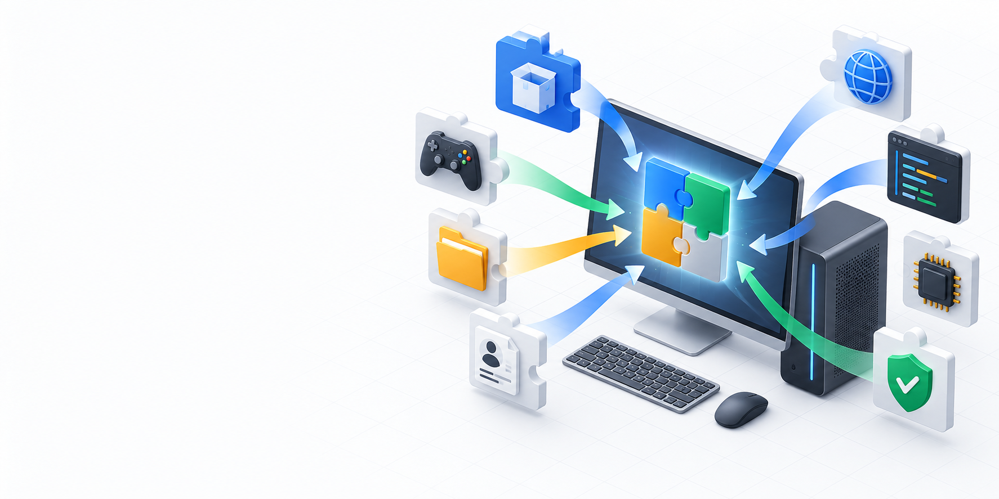

Просканируйте
Программы, папки, настройки, игры, браузеры, ключи и драйверы.
RePC заранее собирает программы, файлы, настройки, игровые сохранения, браузерные профили и драйверы в понятный план восстановления.

Сначала посмотрите, что RePC действительно сможет вернуть. Затем сохраните паспорт на флешку.
Программы, папки, настройки, игры, браузеры, ключи и драйверы.
Один локальный архив с контрольными суммами файлов.
Откройте архив на чистой Windows и верните выбранные данные.
Точные WinGet ID и отчёт о каждой установке.
Сохранения и поддержка Ludusavi.
Экспорт и установка через штатный PnPUtil.
Атомарная запись и проверка целостности.
Локальный перенос выбранных профилей и cookies.
Параметры Windows и рабочих инструментов.


Архив создаётся локально и сохраняется туда, куда вы укажете.
◎БраузерыПрофили, cookies и локальные данные — после подтверждения.
⌘SSH‑ключиТолько выбранная вами папка. Храните флешку как пароль.
×Кошельки и лицензииАвтоматически не извлекаются и не обходятся.
Проверить компьютер и увидеть план.
Перенос на этом компьютере.
Расширенное восстановление.
Сканирование бесплатно. Оплата нужна только для восстановления.